import numpy as np
import pandas as pd
import matplotlib.pyplot as plt
import scipy1 Das Prinzip von Messungen
“In der Physik existiert nur das, was gemessen worden ist” (Merz 1968, 14).
Merz, Ludwig.1968. “Grundkurs der Messtechnik. Teil I: Das Messen elektrischer Größen.” 2. Auflage. München;Wien. R. Oldenbourg Verlag.
In diesem Baustein werden die folgenden Module verwendet:
Physikalische Größen werden mit der Hilfe von Messgeräten bestimmt. Diese ordnen der tatsächlichen Merkmalsausprägung eine numerische Entsprechung relativ zu einem Bezugssystem zu.
Ein Beispiel: “Johanna ist am Messbrett 173 Zentimeter groß.”
- Die tatsächliche Merkmalsausprägung ist Johannas Größe.
- Das Messgerät ist das Messbrett.
- Die numerische Entsprechung ist 173.
- Das Bezugssystem ist das metrische System.
Messwerte sind aus verschiedenen Gründen Annäherungen an den wahren Wert der zugrundeliegenden physikalischen Größe. Zum einen variiert die Größe eines Menschen im Tagesverlauf. Zum anderen ist das Messergebnis auch ein Ergebnis der verwendeten Skala. Wäre die Messung im imperialen Messsystem erfolgt, wäre Johannas Größe mit 68 Zoll bestimmt worden, was 172,72 Zentimetern entspricht.
Das Messergebnis ist also keine exakte Entsprechung der tatsächlichen Merkmalsausprägung. Ein bekanntes Beispiel für die mit dem Messvorgang verbundene Unsicherheit ist das Küstenlinienparadox: Das Ergebnis der Vermessung unregelmäßiger Küstenlinien wird umso größer, je kleiner die Messabschnitte gewählt werden.


Britain-fractal-coastline-200km, Britain-fractal-coastline-100km und Britain-fractal-coastline-50km von Maksim stehen unter der Lizenz CC BY-SA 3.0 und sind abrufbar auf Wikipedia (200km, 100km, 50km). 2006
{kind=link}
{kind=link}
{kind=link}
1.1 Messung
Definition 1.1: Messung
“Eine Messung ist der experimentelle Vorgang, durch den ein spezieller Wert einer physikalischen Größe als Vielfaches einer Einheit oder eines Bezugswertes ermittelt wird.
Die Messung ergibt zunächst einen Messwert. Dieser stimmt aber aufgrund störender Einflüsse mit dem wahren Wert der Messgröße praktisch nie überein, sondern weist eine gewisse Messabweichung auf. Zum vollständigen Messergebnis wird der Messwert, wenn er mit quantitativen Aussagen über die zu erwartende Größe der Messabweichung ergänzt wird. Dies wird in der Messtechnik als Teil der Messaufgabe und damit der Messung verstanden.”
Messung. von verschiedenen Autor:innen steht unter der Lizenz CC BY-SA 4.0 ist abrufbar auf Wikipedia https://de.wikipedia.org/wiki/Messung. 2025
- Die ideale Messung ist eine direkte Messung oder der gesuchte Wert hängt linear (direkt?!) vom gemessenen Wert ab.
- Die ideale Messung ist genau und präzise.
Direkte und indirekte Messung
Bei einer direkten Messung wird die Messgröße durch den unmittelbaren Vergleich mit einem Normal oder einem genormten Bezugssystem gewonnen.
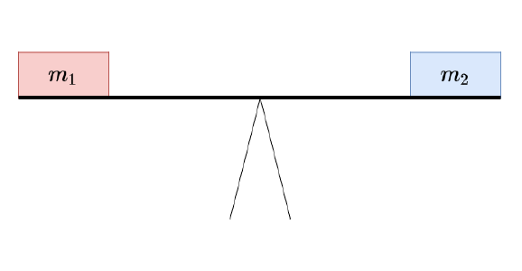
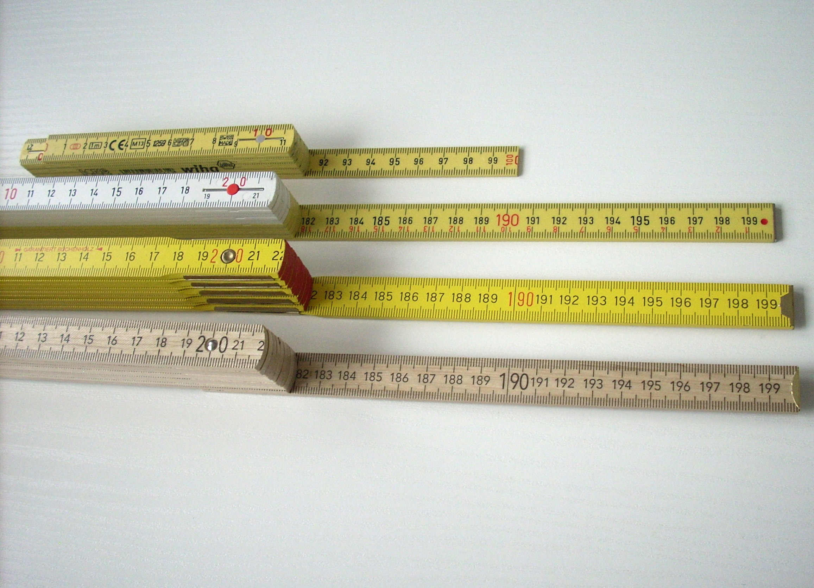
Gliedermaßstäbe von Fst76 ist lizensiert unter CC-BY-SA 3.0 und ist abrufbar auf Wikimedia. 2014
{kind=link}
Bei einer indirekten Messung wird die Messgröße auf eine andere pyhsikalische Größe zurückgeführt.
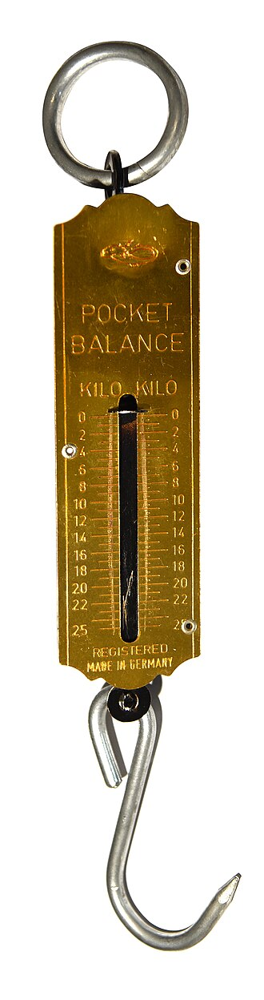
Spring scale von Amada44 steht unter der Lizenz CC-BY-SA-3.0 unported und ist abrufbar auf Wikimedia. 2016
{kind=link}
Observe the Moon wurde von der NASA veröffentlicht und ist abrufbar unter nasa.gov. 2010
Genauigkeit und Präzision
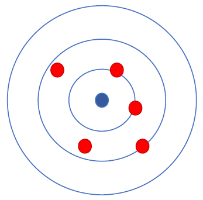

Die Genauigkeit einer Messung ist ein Maß für die Abweichung der Messwerte vom realen Wert. Die Genauigkeit ist nur bestimmbar, wenn anerkannte Referenzwerte vorhanden sind.
Die Präzision einer Messung beschreibt, wie gut die einzelnen Messwerte miteinander übereinstimmen. Die Präszision einer Messung wird über die Standardabweichung der Stichprobe bestimmt.
1.2 Messreihen
Um die Unsicherheit einer Messung zu verringern, kann man einen Messwert in Form einer Messreihe wiederholt aufnehmen. Die (erste) beste Schätzung der Messgröße bietet der arithmetische Mittelwert der Messreihe.
Der arithmetische Mittelwert einer Messreihe \(\bar{x}\) ist die Summe aller Einzelmesswerte dividiert durch die Anzahl der Messwerte \(N\).
\[ \bar{x} = \frac{1}{N} \sum_{i=1}^{N} x_i \]
Mit Hilfe des arithmetischen Mittelwerts kann eine Aussage über die Streuung der Messwerte und die Präzision der Messung getroffen werden. Dazu werden die Varianz und die Standardabweichung der Messreihe berechnet.
Die Varianz ist der Mittelwert der quadrierten Abweichungen vom Mittelwert.
\[ \text{Var}(x_i) = \frac{1}{N} \sum_{i=1}^{N}(x_i - \bar{x})^2 \]
Hier könnte statt \(\text{Var}(x_i)\) auch \(s^{2}\) geschrieben werden.
Die Quadratwurzel der Varianz wird als Standardabweichung bezeichnet. Diese hat den Vorteil, dass sie in der Einheit der Messwerte vorliegt und dadurch leichter zu interpretieren ist. Die Standardabweichung \(s\) wird so berechnet:
\[ s_{N} = \sqrt{\frac{1}{N} \sum_{i=1}^{N}(x_i - \bar{x})^2} \]
Für Stichproben wird die Stichprobenvarianz verwendet. Für die Standardabweichung einer Stichprobe gilt:
\[ s_{N-1} = \sqrt{\frac{1}{N-1} \sum_{i=1}^{N}(x_i - \bar{x})^2} \]
Hinweis 1.1: Standardabweichung und Varianz in der Grundgesamtheit
In der Stochastik werden Formeln häufig auch mit griechischen Buchstaben geschrieben, wenn Sie sich statt auf eine Stichprobe auf die Grundgesamtheit beziehen.
Der Mittelwert in der Grundgesamtheit wird auch Erwartungswert genannt und mit dem griechischen Buchstaben \(\mu\) (My) dargestellt. Die Standardabweichung des Erwartungswerts wird mit \(\sigma\) (Sigma) gekennzeichnet. \[ \sigma = \sqrt{\frac{1}{N} \sum_{i=1}^{N}(x_i - \mu)^2} \]
Mit Hilfe der Standardabweichung kann der Standardfehler der Messung bestimmt werden. Der Standardfehler ist ein Maß dafür, wie genau sich der arithmetische Mittelwert der Stichprobe an den tatsächlichen Mittelwert der Grundgesamtheit, den Erwartungswert, annähert (dazu gleich mehr) und wird auch Stichprobenfehler genannt. Der Standardfehler wird aus der Standardabweichung einer Messung und der Wurzel der Stichprobengröße berechnet. Da die Varianz in der Grundgesamtheit in der Regel unbekannt ist, wird der Standardfehler mit der Stichprobenvarianz geschätzt.
\[ \sigma_{\bar{x}} ~ = ~ \frac{s}{\sqrt{N}} \]
Der Standardfehler wird umso kleiner (die Messung umso präziser), je kleiner die Varianz in der Grundgesamtheit und je größer der Stichprobenumfang ist.
Dies lässt sich mit einem simulierten Würfelexperiment verdeutlichen. Bei einem idealen, fairen Würfel kommt jede Augenzahl gleich oft vor. Der Erwartungswert eines sechsseitigen Würfels ist:
\[ \frac{1}{6} \sum_{i=1}^{i=6}(x_i) ~ = ~ 3,5 \]
Die Standardabweichung eines fairen, sechsseitigen Würfels beträgt:
\[ \sqrt{\frac{1}{6} \sum_{i=1}^{i=6}(x_i - 3,5)^2} ~ \approx ~ 1,71 \]
Da die Varianz in der Grundgesamtheit bekannt ist, hängt der Standardfehler des Mittelwerts eines fairen Würfels allein von der Stichprobengröße ab.
Experiment Verteilungskenngrößen
Im simulierten Experiment würfeln 100 Personen jeweils 3, 10 und 50 Mal und bilden den Mittelwert der Augen. Weil ein fairer Würfel simuliert wird, kann der Standardfehler mit der Standardabweichung der Grundgesamtheit berechnet werden.
Würfe pro Person: 3 Stichprobengröße: 300
kleinster Mittelwert: 1.00 größter Mittelwert: 6.00
Stichprobenmittelwert: 3.57 Standardfehler: 0.10
Würfe pro Person: 10 Stichprobengröße: 1000
kleinster Mittelwert: 1.70 größter Mittelwert: 4.60
Stichprobenmittelwert: 3.49 Standardfehler: 0.05
Würfe pro Person: 50 Stichprobengröße: 5000
kleinster Mittelwert: 2.98 größter Mittelwert: 4.36
Stichprobenmittelwert: 3.50 Standardfehler: 0.02
Mit zunehmender Anzahl an Würfen nähern sich Minimum und Maximum der individuellen Durchschnittswerte sowie der Stichprobenmittelwert dem Erwartungswert an.
Hinweis: Da das Skript dynamisch generiert wird, wurden die Zufallszahlen von einem festgelegten Startwert aus erzeugt.
Die Häufigkeit der individuellen Mittelwerte ist in den folgenden Histogrammen dargestellt.
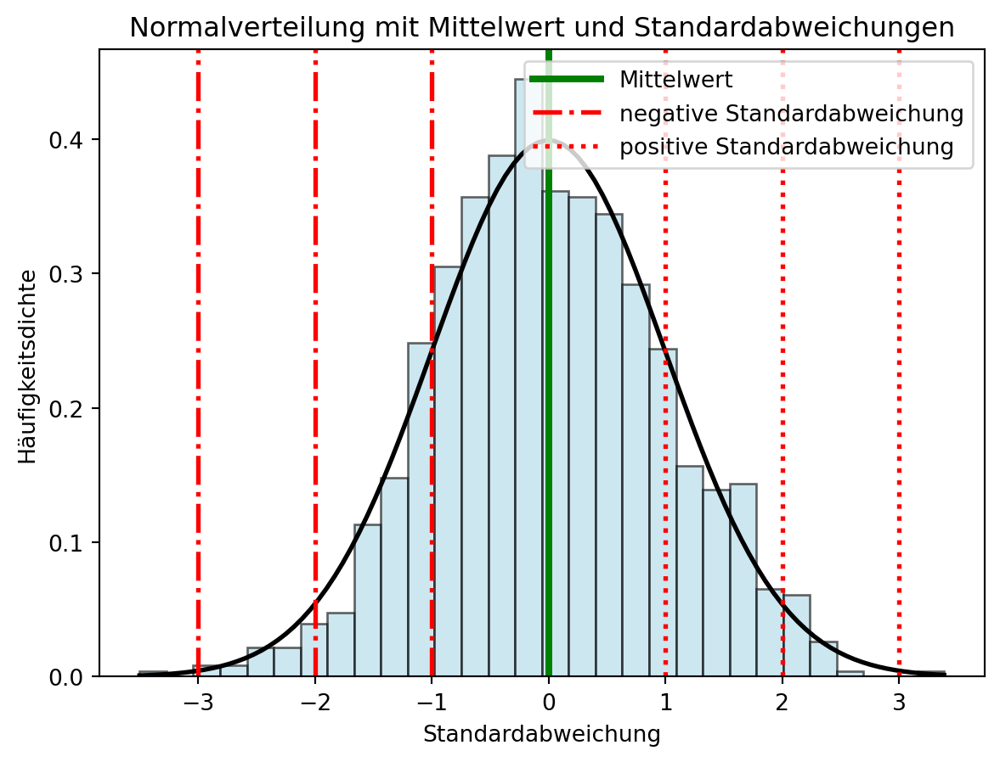
Berechnung
personen = 100
standardabweichung_grundgesamtheit = np.arange(1, 7).std(ddof = 0)
seed = 1
# 3 Würfe
würfe = 3
## Personen stehen in den Zeilen (axis = 0), Würfe in den Spalten (axis = 1)
augen3 = np.random.default_rng(seed = seed).integers(low = 1, high = 6, endpoint = True, size = (personen, würfe)) # high is exclusive if endpoint = False
## zeilenweise Mittelwert bilden mit np.array.mean(axis = 1)
print(f"Würfe pro Person: {würfe}\t\t\t\t",
f"Stichprobengröße: {würfe * personen}\n",
f"kleinster Mittelwert: {augen3.mean(axis = 1).min():.2f}\t\t",
f"größter Mittelwert: {augen3.mean(axis = 1).max():.2f}\n",
f"Stichprobenmittelwert: {augen3.mean():.2f}\t\t",
f"Standardfehler: {standardabweichung_grundgesamtheit / ( augen3.size ** (1/2) ):.2f}\n",
sep = "")
# 10 Würfe
würfe = 10
## Personen stehen in den Zeilen (axis = 0), Würfe in den Spalten (axis = 1)
augen10 = np.random.default_rng(seed = seed).integers(low = 1, high = 6, endpoint = True, size = (personen, würfe)) # high is exclusive if endpoint = False
## zeilenweise Mittelwert bilden mit np.array.mean(axis = 1)
print(f"Würfe pro Person: {würfe}\t\t\t",
f"Stichprobengröße: {würfe * personen}\n",
f"kleinster Mittelwert: {augen10.mean(axis = 1).min():.2f}\t\t",
f"größter Mittelwert: {augen10.mean(axis = 1).max():.2f}\n",
f"Stichprobenmittelwert: {augen10.mean():.2f}\t\t",
f"Standardfehler: {standardabweichung_grundgesamtheit / ( augen10.size ** (1/2) ):.2f}\n",
sep = "")
# 50 Würfe
würfe = 50
## Personen stehen in den Zeilen (axis = 1), Würfe in den Spalten (axis = 1)
augen50 = np.random.default_rng(seed = seed).integers(low = 1, high = 6, endpoint = True, size = (personen, würfe)) # high is exclusive if endpoint = False
## zeilenweise Mittelwert bilden mit np.array.mean(axis = 1)
print(f"Würfe pro Person: {würfe}\t\t\t",
f"Stichprobengröße: {würfe * personen}\n",
f"kleinster Mittelwert: {augen50.mean(axis = 1).min():.2f}\t\t",
f"größter Mittelwert: {augen50.mean(axis = 1).max():.2f}\n",
f"Stichprobenmittelwert: {augen50.mean():.2f}\t\t",
f"Standardfehler: {standardabweichung_grundgesamtheit / ( augen50.size ** (1/2) ):.2f}\n",
sep = "")Darstellung
personen = 100
standardabweichung_grundgesamtheit = np.arange(1, 7).std(ddof = 0)
seed = 1
# 3 Würfe
würfe = 3
augen3 = np.random.default_rng(seed = seed).integers(low = 1, high = 6, endpoint = True, size = (personen, würfe)) # high is exclusive if endpoint = False
# 10 Würfe
würfe = 10
augen10 = np.random.default_rng(seed = seed).integers(low = 1, high = 6, endpoint = True, size = (personen, würfe)) # high is exclusive if endpoint = False
# 50 Würfe
würfe = 50
augen50 = np.random.default_rng(seed = seed).integers(low = 1, high = 6, endpoint = True, size = (personen, würfe)) # high is exclusive if endpoint = False
# plotten
bins = 10
# 3 Würfe
fig, (ax1, ax2, ax3) = plt.subplots(1, 3, sharey = True)
ax1.hist(augen3.mean(axis = 1), bins = bins, alpha = 0.6, edgecolor = 'black', range = (1, 6))
ax1.set_xlim(1, 6)
ax1.axvline(x = 3.5, ymin = 0, ymax = 1, color = 'black', label = 'Erwartungswert')
ax1.set_ylabel('mittleres Würfelergebnis')
ax1.set_ylabel('Häufigkeit Mittelwert')
ax1.set_title("3 Würfe pro Person")
ax1.legend(loc = 'lower left', bbox_to_anchor = (0, -0.2))
# 10 Würfe
ax2.hist(augen10.mean(axis = 1), bins = bins, alpha = 0.6, edgecolor = 'black', range = (1, 6))
ax2.set_xlim(1, 6)
ax2.axvline(x = 3.5, ymin = 0, ymax = 1, color = 'black')
ax2.set_ylabel('mittleres Würfelergebnis')
ax2.set_title("10 Würfe pro Person")
# 30 Würfe
ax3.hist(augen50.mean(axis = 1), bins = bins, alpha = 0.6, edgecolor = 'black', range = (1, 6))
ax3.set_xlim(1, 6)
ax3.axvline(x = 3.5, ymin = 0, ymax = 1, color = 'black')
ax3.set_ylabel('mittleres Würfelergebnis')
ax3.set_title("30 Würfe pro Person")
plt.tight_layout()
plt.show()Aufgabe Verteilungskenngrößen
Im Datensatz ToothGrowth.csv ist eine Messreihe zur Länge zahnbildender Zellen bei Meerschweinchen gespeichert. Die Tiere erhielten Vitamin C direkt (VC) oder in Form von Orangensaft (OJ) in unterschiedlichen Dosen.
dateipfad = "01-daten/ToothGrowth.csv"
meerschweinchen = pd.read_csv(filepath_or_buffer = dateipfad, sep = ',', header = 0, \
names = ['ID', 'len', 'supp', 'dose'], dtype = {'ID': 'int', 'len': 'float', 'dose': 'float', 'supp': 'category'})Crampton, E. W. 1947. „THE GROWTH OF THE ODONTOBLASTS OF THE INCISOR TOOTH AS A CRITERION OF THE VITAMIN C INTAKE OF THE GUINEA PIG“. The Journal of Nutrition 33 (5): 491–504. https://doi.org/10.1093/jn/33.5.491
Der Datensatz kann in R mit dem Befehl “ToothGrowth” aufgerufen werden.
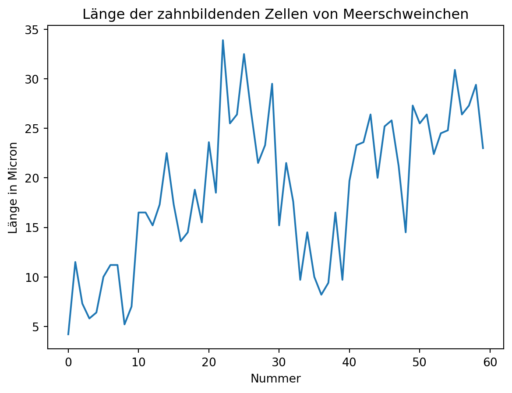
Berechnen Sie den arithmetischen Mittelwert, die Varianz, die Standardabweichung und den Stichprobenfehler der Messreihe zur Zahnlänge (len). Verwenden Sie dazu die vorgestellten Formeln.
Das Ergebnis könnte so aussehen:
N: 60
arithmetisches Mittel: 18.81
Stichprobenfehler: 0.99
Stichprobenvarianz: 58.51
Standardabweichung: 7.65
Tipp 1.1: Musterlösung Verteilungskenngrößen
def verteilungskennwerte(x, output = True):
# Anzahl Messwerte bestimmen
N = len(x)
# arithmetisches Mittel bestimmen
mittelwert = sum(x) / N
# Stichprobenvarianz bestimmen
stichprobenvarianz = sum((x - mittelwert) ** 2) / (N - 1)
# Standardabweichung bestimmen
standardabweichung = stichprobenvarianz ** (1/2)
# Stichprobenfehler bestimmen
stichprobenfehler = standardabweichung / (N ** (1/2))
# Ausgabe
if output: # output = True
print(f"N: {N}\n",
f"arithmetisches Mittel: {mittelwert:.2f}\n",
f"Stichprobenfehler: {stichprobenfehler:.2f}\n",
f"Stichprobenvarianz: {stichprobenvarianz:.2f}\n",
f"Standardabweichung: {standardabweichung:.2f}",
sep = '')
else: # output = False
return N, mittelwert, stichprobenfehler, stichprobenvarianz, standardabweichung
verteilungskennwerte(meerschweinchen['len'])Die Module NumPy und Pandas verfügen über eigene Funktionen zur Berechnung der Varianz und der Standardabweichung (siehe folgendes Beispiel).
Beispiel 1.1: Varianz und Standardabweichung mit NumPy und Pandas
Die Varianz und Standardabweichung werden mit den Funktion np.var() und np.std() bzw. den Methoden pd.var() und pd.std() berechnet. Der Parameter ddof (delta degrees of freedom) steuert, welcher Nenner zur Berechnung der Varianz verwendet wird in der Form N - ddof. Während der Standardwert in NumPy 0 ist, berechnet Pandas mit dem Standardwert ddof=1 die Stichprobenvarianz.
print("Varianz:")
print(f"NumPy:\t{np.var(meerschweinchen['len']):.2f}")
print(f"Pandas:\t{meerschweinchen['len'].var():.2f}")
print("\nStandardabweichung:")
print(f"NumPy:\t{np.std(meerschweinchen['len']):.2f}")
print(f"Pandas:\t{meerschweinchen['len'].std():.2f}")Varianz:
NumPy: 57.54
Pandas: 58.51
Standardabweichung:
NumPy: 7.59
Pandas: 7.651.3 Die Normalverteilung
Mit zunehmender Stichprobengröße wird eine immer bessere Schätzung des Erwartungswerts erreicht. Mathematisch liegt dieser Beobachtung der zentrale Grenzwertsatz zugrunde. So werden beim Würfeln mit mehreren Würfeln weit vom Erwartungswert entfernte Wurfergebnisse immer unwahrscheinlicher. Dies lässt sich bereits mit wenigen Würfeln zeigen (siehe Beispiel).
Beispiel 1.2: Häufigkeitsverteilung von Würfelergebnissen
Für einen Würfel gibt es 6 mögliche Ergebnisse, für 2 Würfel 6 * 6 mögliche Kombinationen, für 3 Würfel 6 * 6 * 6 Kombinationen und so weiter. Weil viele Kombinationen wertgleich sind, kommen Wurfergebnisse in der Nähe des Erwartungswerts häufiger vor als beispielsweise ein Einserpasch.
ein_würfel = []
for i in range(1, 7):
ein_würfel.append(i)
ein_würfel = pd.Series(ein_würfel)
print("Häufigkeitsverteilung der Augensumme:")
print(ein_würfel.value_counts(), "\n")
print(f"Durchschnitt: {ein_würfel.mean():.1f}")
plt.bar(ein_würfel.unique(), ein_würfel.value_counts())
plt.xlabel('Augenzahl')
plt.ylabel('Anzahl Kombinationen')
plt.show()Häufigkeitsverteilung der Augensumme:
1 1
2 1
3 1
4 1
5 1
6 1
Name: count, dtype: int64
Durchschnitt: 3.5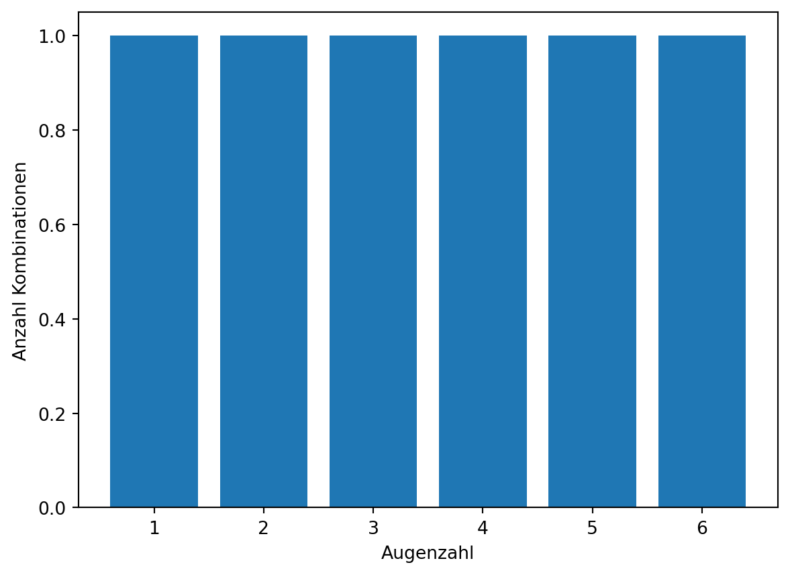
zwei_würfel = []
for i in range(1, 7):
würfel_1 = i
for j in range (1, 7):
würfel_2 = j
zwei_würfel.append(würfel_1 + würfel_2)
zwei_würfel = pd.Series(zwei_würfel)
print("Häufigkeitsverteilung der Augensumme:")
print(zwei_würfel.value_counts().sort_index(ascending = True), "\n")
print(f"Durchschnitt: {zwei_würfel.mean():.1f}")
print(f"Durchschnitt pro Würfel: {zwei_würfel.mean() / 2:.1f}")
plt.bar(zwei_würfel.unique(), zwei_würfel.value_counts().sort_index(ascending = True))
plt.xlabel('Augenzahl')
plt.ylabel('Anzahl Kombinationen')
plt.grid()
plt.show()Häufigkeitsverteilung der Augensumme:
2 1
3 2
4 3
5 4
6 5
7 6
8 5
9 4
10 3
11 2
12 1
Name: count, dtype: int64
Durchschnitt: 7.0
Durchschnitt pro Würfel: 3.5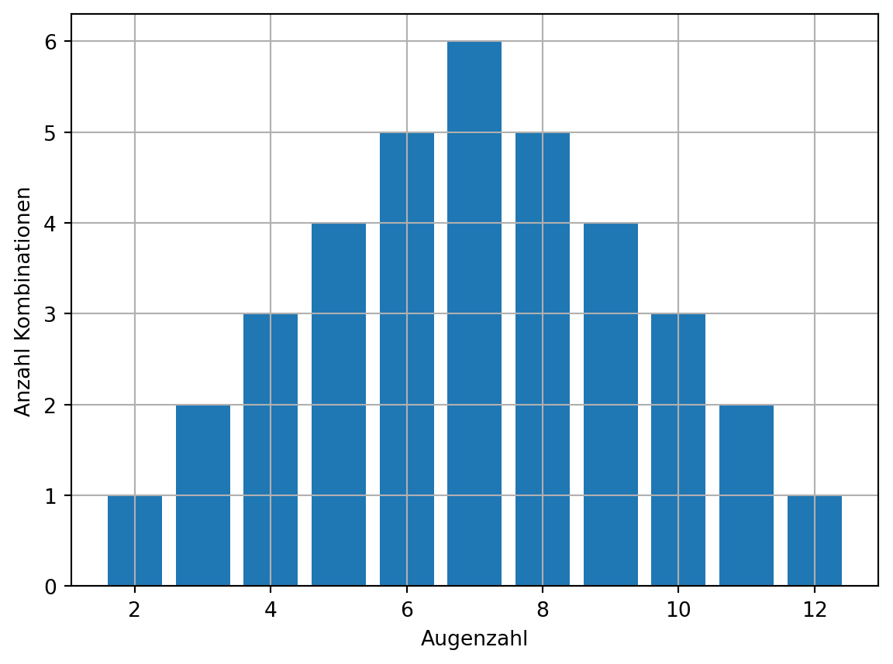
drei_würfel = []
for i in range(1, 7):
würfel_1 = i
for j in range (1, 7):
würfel_2 = j
for k in range (1, 7):
würfel_3 = k
drei_würfel.append(würfel_1 + würfel_2 + würfel_3)
drei_würfel = pd.Series(drei_würfel)
print("Häufigkeitsverteilung der Augensumme:")
print(drei_würfel.value_counts().sort_index(ascending = True), "\n")
print(f"Durchschnitt: {drei_würfel.mean():.1f}")
print(f"Durchschnitt pro Würfel: {drei_würfel.mean() / 3:.1f}")
plt.bar(drei_würfel.unique(), drei_würfel.value_counts().sort_index(ascending = True))
plt.xlabel('Augenzahl')
plt.ylabel ('Anzahl Kombinationen')
plt.grid()
plt.show()Häufigkeitsverteilung der Augensumme:
3 1
4 3
5 6
6 10
7 15
8 21
9 25
10 27
11 27
12 25
13 21
14 15
15 10
16 6
17 3
18 1
Name: count, dtype: int64
Durchschnitt: 10.5
Durchschnitt pro Würfel: 3.5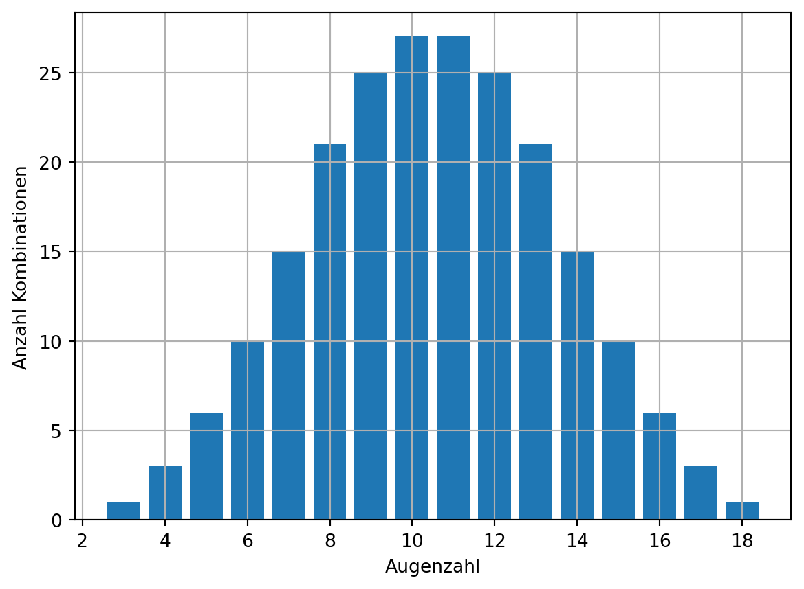
Die t-Verteilung müsste eingeführt werden.
Die mit steigender Stichprobengröße zu beobachtende Annäherung von Messdaten an einen in der Grundgesamtheit geltenden Erwartungswert gilt auch, wenn der Erwartungswert und die Varianz in der Grundgesamtheit unbekannt sind. Mit zunehmender Stichprobengröße nähert sich die t-Verteilung der Messwerte der Normalverteilung an, die nach ihrem Entdecker Carl Friedrich Gauß auch als Gaußsche Glockenkurve bekannt ist.
Die Normalverteilung ist eine Dichtekurve, an die sich der Verlauf eines Histogramms mit einer gegen unendlich gehenden Anzahl von Messwerten und einer gegen Null gehenden Klassenbreite annähert.
Definition 1.2: Histogramm
Das Histogramm ist eine grafische Darstellung der Häufigkeitsverteilung kardinal skalierter Merkmale. Die Daten werden in Klassen, die eine konstante oder variable Breite haben können, eingeteilt. Es werden direkt nebeneinanderliegende Rechtecke von der Breite der jeweiligen Klasse gezeichnet, deren Flächeninhalte die (relativen oder absoluten) Klassenhäufigkeiten darstellen. Die Höhe jedes Rechtecks stellt dann die (relative oder absolute) Häufigkeitsdichte dar, also die (relative oder absolute) Häufigkeit dividiert durch die Breite der entsprechenden Klasse.
Beispiel 1.3: Histogramm berechnen und visualisieren
Als Beispiel wird die Länge der zahnbildenden Zellen der Meerschweinchen verwendet, die eine Vitamin-C-Dosis von 2 erhielten.
dose2 = meerschweinchen.loc[meerschweinchen['dose'] == 2, 'len']
print(*list(dose2)) # * = Ausgabe ohne Kommata
print("N", len(dose2), "Minimum:", dose2.min(), "Maximum:", dose2.max(), "Spannweite", dose2.max() - dose2.min())23.6 18.5 33.9 25.5 26.4 32.5 26.7 21.5 23.3 29.5 25.5 26.4 22.4 24.5 24.8 30.9 26.4 27.3 29.4 23.0
N 20 Minimum: 18.5 Maximum: 33.9 Spannweite 15.399999999999999Mit der Funktion np.histogram(a, bins = 10, range = None, density = None) kann ein Histogramm berechnet werden.
asind die zu berechnenden Datenbinsspezifiziert die Anzahl an Klassen, standardmäßig werden 10 gewählt.range = (float, float)erlaubt es, die untere und obere Grenze der Klassen festzulegen.density = Trueerlaubt es statt der absoluten Häufigkeiten, den Wert der Häufigkeitsdichtefunktion darzustellen. Dies berechnet sich wie folgt:- relative Häufigkeit = Anzahl Werte je Klasse / Anzahl aller Werte
- Häufigkeitsdichte = Anzahl Werte je Klasse / (Anzahl aller Werte * Klassenbreite)
- Klassenbreite = Maximum(Werte) - Minimum(Werte) / Anzahl Klassen
Für die überschaubare Anzahl an Werten wird ein Histogramm mit 5 Klassen berechnet. Zum Vergleich wird auch die Häufigkeitsdichte ausgegeben.
print(np.histogram(dose2, bins = 5))
print("Häufigkeitsdichte:", np.histogram(dose2, bins = 5, density = True)[0])(array([2, 5, 8, 2, 3]), array([18.5 , 21.58, 24.66, 27.74, 30.82, 33.9 ]))
Häufigkeitsdichte: [0.03246753 0.08116883 0.12987013 0.03246753 0.0487013 ]Die Funktion np.histogram() gibt an erster Stelle ein array mit den absoluten Häufigkeiten bzw. der Häufigkeitsdichte jeder Klasse zurück. An zweiter Stelle wird ein array mit den x-Positionen der Klassenrechtecke zurückgegeben - dabei wird für jede Klasse die Position der linken Seite sowie für die letzte Klasse zusätzlich die Position der rechten Seite des Rechtecks ausgegeben. Für 5 Klassen werden also 6 Positionswerte ausgegeben.
Die Klassenbreite kann zum Beispiel mit der Methode np.diff() ausgegeben werden.
hist_abs, bin_edges = np.histogram(dose2, bins = 5)
klassenbreite = np.diff(bin_edges)
print(klassenbreite)[3.08 3.08 3.08 3.08 3.08]Durch Multiplikation der Häufigkeitsdichte mit der Klassenbreite können die relativen Häufigkeiten berechnet werden.
hist_dichte = np.histogram(dose2, bins = 5, density = True)[0]
hist_relativ = hist_dichte * klassenbreite
print(hist_relativ)[0.1 0.25 0.4 0.1 0.15]Die Summe der relativen Häufigkeiten ist 1.
Ein Histogramm kann mit der Funktion plt.hist(x, bins = None, *, range = None, density = False) aufgerufen werden, welche intern np.histogram() für die Berechnungen aufruft. Die Parameter der Funktion entsprechenen denen der NumPy-Funktion, wobei mit dem Argument x die darzustellenden Daten übergeben werden. Zusätzlich können verschiedene Grafikparameter übergeben werden.
Die Funktion hat 3 Rückgabewerte: die absolute Häufigkeit der Klassen (bzw. wenn density = True die Häufigkeitsdichte), die x-Position der Rechtecke.
plt.hist(dose2, bins = 5, edgecolor = 'black')
plt.title('Länge zahnbildender Zellen bei Meerschweinchen')
# Achsenbeschriftung
plt.xlabel('Länge der zahnbildenden Zellen (μm)')
plt.ylabel('absolute Häufigkeit')
plt.show()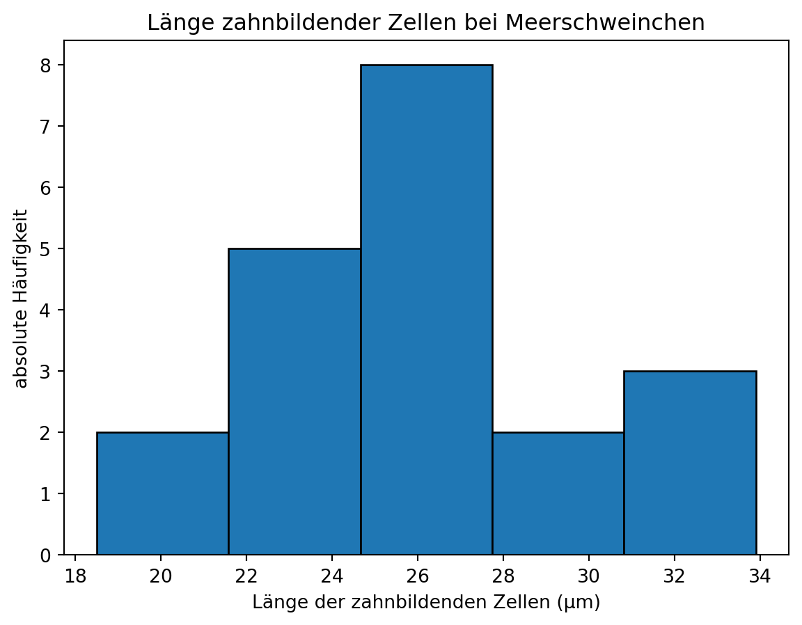
Eine Darstellung der relativen Häufigkeiten ist nicht direkt möglich.
hist_dichte, bins, ignore = plt.hist(dose2, bins = 5, density = True, edgecolor = 'black')
plt.title('Länge zahnbildender Zellen bei Meerschweinchen')
# relative Häufigkeit berechnen
klassenbreite = np.diff(bins)[0]
hist_relativ = hist_dichte * klassenbreite
# yticks erzeugen an der Position von min(hist_dichte) bis max(hist_dichte)
# aber mit Werten von hist_relativ
plt.yticks(ticks = np.linspace(min(hist_dichte), max(hist_dichte), len(hist_relativ)),
labels = np.linspace(hist_relativ.round(2).min(), hist_relativ.round(2).max(), len(hist_relativ)).round(3));
# Achsenbeschriftung
plt.xlabel('Länge der zahnbildenden Zellen (μm)')
plt.ylabel('relative Häufigkeit')
plt.show()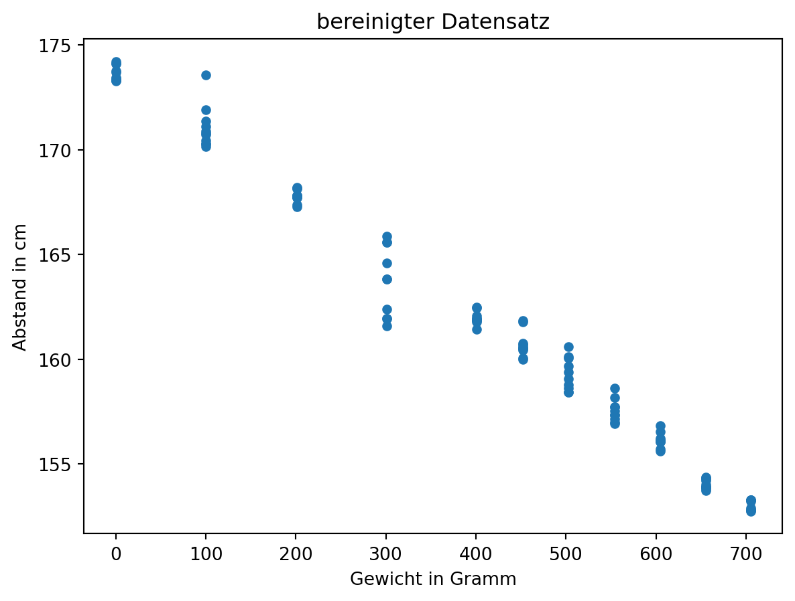
plt.hist(dose2, bins = 5, density = True, edgecolor = 'black')
plt.title('Länge zahnbildender Zellen bei Meerschweinchen')
# Achsenbeschriftung
plt.xlabel('Länge der zahnbildenden Zellen (μm)')
plt.ylabel('Häufigkeitsdichte')
plt.show()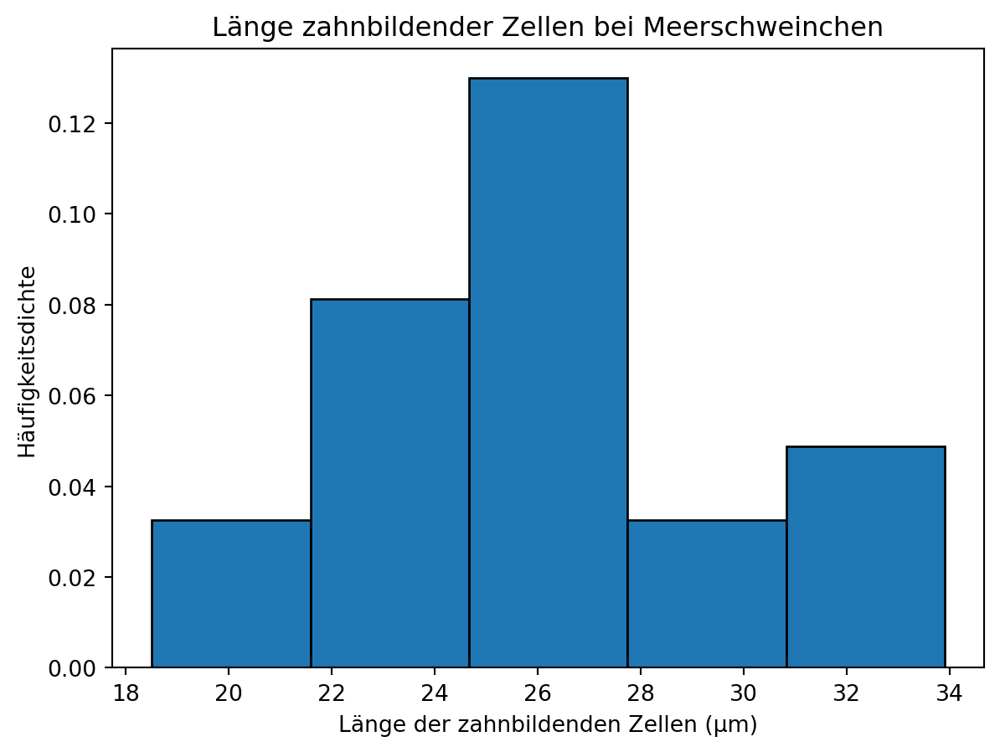
Histogramme sind nicht immer gut geeignet, um die Verteilung einer Stichprobe zu charakterisieren. Der visuelle Eindruck hängt von der gewählten Klassenzahl ab - ein Beispiel:
plt.hist(meerschweinchen['len'], bins = 3, density = True, edgecolor = 'black', alpha = 0.6);
plt.title('Länge zahnbildender Zellen bei Meerschweinchen')
# Achsenbeschriftung
plt.xlabel('Länge der zahnbildenden Zellen (μm)')
plt.ylabel('Häufigkeitsdichte')
plt.show()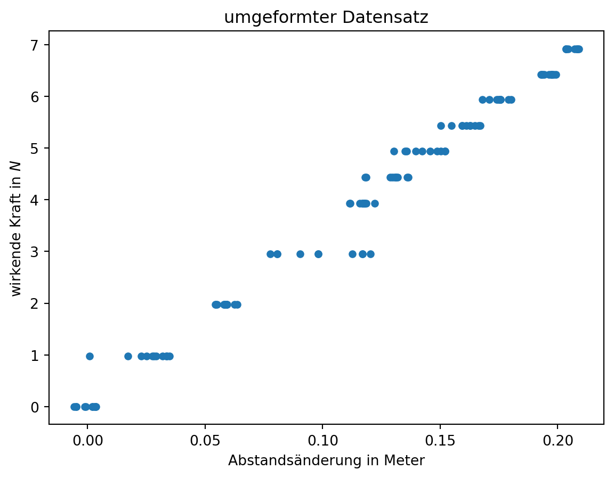
plt.hist(meerschweinchen['len'], bins = 5, density = True, edgecolor = 'black', alpha = 0.6);
plt.title('Länge zahnbildender Zellen bei Meerschweinchen')
# Achsenbeschriftung
plt.xlabel('Länge der zahnbildenden Zellen (μm)')
plt.ylabel('Häufigkeitsdichte')
plt.show()
plt.hist(meerschweinchen['len'], bins = 7, density = True, edgecolor = 'black', alpha = 0.6);
plt.title('Länge zahnbildender Zellen bei Meerschweinchen')
# Achsenbeschriftung
plt.xlabel('Länge der zahnbildenden Zellen (μm)')
plt.ylabel('Häufigkeitsdichte')
plt.show()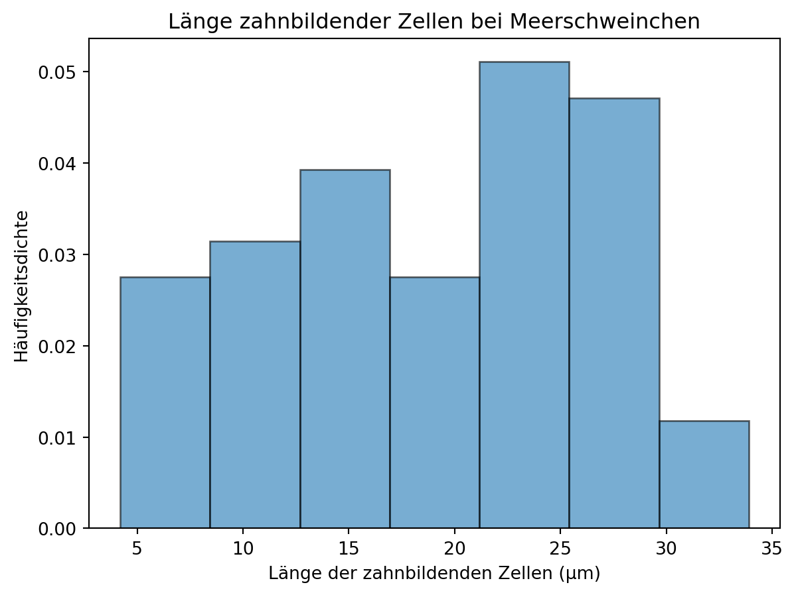
Mit einer Dichtekurve wird optisch der Übergang zu einem Histogramm mit einer gegen unendlich gehenden Anzahl von Klassen vollzogen. Dadurch gehen zwar Details verloren, aber es wird eine klare Darstellung erreicht.
Die Dichtefunktion der Normalverteilung beschreibt, welcher Anteil der Werte innerhalb eines bestimmten Wertebereichs liegt. Bei der Berechnung der relativen Häufigkeiten in Beispiel 1.3 haben wir gesehen, dass die Summe der relativen Häufigkeiten 1 ist. Dies entspricht der Fläche unterhalb der Dichtekurve.
Die Dichtefunktion der Normalverteilung ist definiert als:
\[ f(x) = \frac{1}{\sigma \sqrt{2\pi}} ~ e^{-\frac{1}{2}\left(\frac{x-\mu}{\sigma}\right)^2} \]
Der Erwartungswert ist der höchste Punkt der Kurve. Die Wendepunkte der Kurve liegen jeweils eine Standardabweichung vom Mittelwert entfernt.
Eine Normalverteilung mit dem Mittelwert \(\mu = 0\) und einer Standardabweichung \(\sigma = 1\) heißt Standardnormalverteilung.
Normalverteilung anpassen
Um die Verteilung in einem Datensatz durch eine Normalverteilung anzunähern, werden dessen Mittelwert und Standardabweichung in die Funktionsgleichung der Normalverteilung eingesetzt. Mit Python können die Berechnungen direkt vorgenommen werden (siehe folgendes Beispiel). In der Handhabung einfacher sind die vom Paket SciPy bereitgestellten Funktionen, die im nächsten Abschnitt vorgestellt werden.
Beispiel 1.4: Dichtekurven berechnen und darstellen
Betrachten wir die Verteilungskennwerte der Gruppe der Meerschweinchen, die eine Dosis von 2 Milligramm Vitamin C erhielten.
print(verteilungskennwerte(dose2), "\n");
dose2_mean = verteilungskennwerte(dose2, output = False)[1]
dose2_std = verteilungskennwerte(dose2, output = False)[4]
print("Exakter Mittelwert:", dose2_mean)
print("Exakte Standardabweichung:", dose2_std)N: 20
arithmetisches Mittel: 26.10
Stichprobenfehler: 0.84
Stichprobenvarianz: 14.24
Standardabweichung: 3.77
None
Exakter Mittelwert: 26.1
Exakte Standardabweichung: 3.7741503052098744Wenn wir die Standardabweichung und das arithmetische Mittel in die Normalverteilungsfunktion einsetzen, erhalten wir:
\[ f(x) = \frac{1}{3.7742 \sqrt{2\pi}} ~ e^{-\frac{1}{2}\left(\frac{x-26.10}{3.7742}\right)^2} \]
\[ f(x) = 0.1057 \times e^{-\frac{1}{2}\left(\frac{x-26.10}{3.7742}\right)^2} \]
In Python können die Berechnungen umgesetzt und grafisch dargestellt werden:
# Histogram der Häufigkeitsdichte zeichnen
plt.hist(dose2, bins = 7, density = True, edgecolor = 'black', alpha = 0.6);
plt.title('Länge zahnbildender Zellen bei Meerschweinchen')
# Achsenbeschriftung
plt.xlabel('Länge der zahnbildenden Zellen (μm)')
plt.ylabel('Häufigkeitsdichte')
# Normalverteilung berechnen.
hist, bin_edges = np.histogram(dose2, bins = 7)
x_values = np.linspace(min(bin_edges), max(bin_edges), 100)
## Dichtefunktion der Normalverteilung berechnen
y_values = 1 / (dose2_std * np.sqrt(2 * np.pi)) * np.exp(- (x_values - dose2_mean) ** 2 / (2 * dose2_std ** 2))
## Normalverteilungsfunktion mit Python berechnen
y_values = 1 / (dose2_std * np.sqrt(2 * np.pi)) * np.exp(- (x_values - dose2_mean) ** 2 / (2 * dose2_std ** 2))
plt.plot(x_values, y_values, label = 'Normalverteilung', lw = 4)
plt.legend()
plt.show()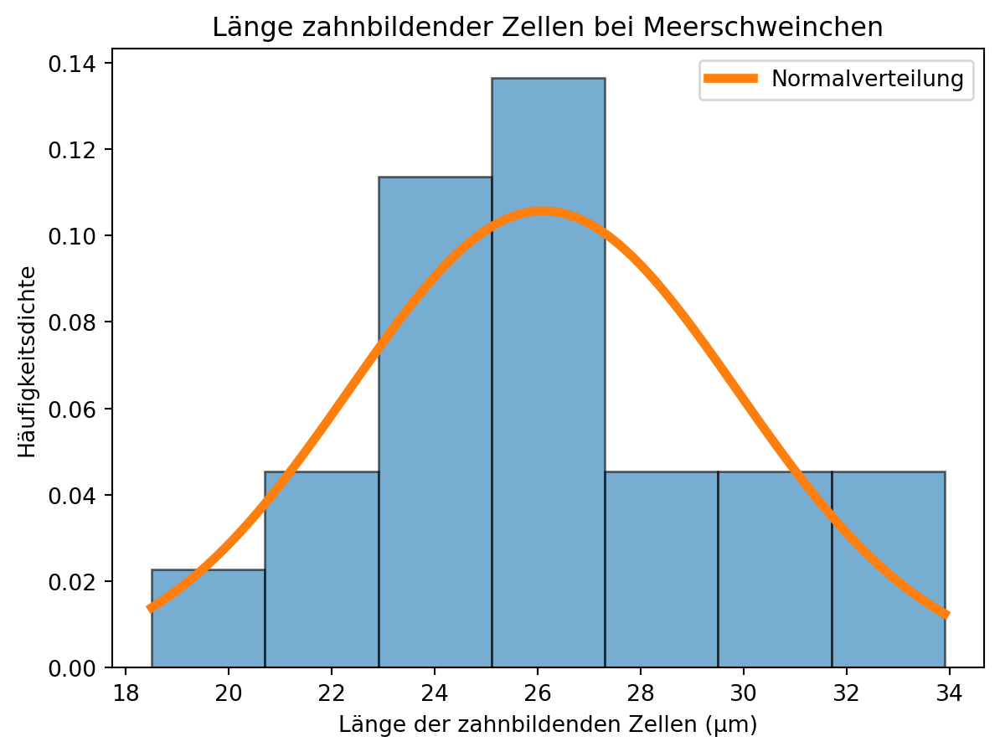
Quelle: Skript MB S. 51-54
Die Verteilung der Länge zahnbildender Zellen bei Meerschweinchen, die eine Dosis von 2 Milligramm Vitamin C erhielten, könnte einer Normalverteilung entsprechen. Aufgrund der geringen Stichprobengröße ist dies aber schwer zu beurteilen.
Das Paket SciPy
Funktionen zur Berechnung von Dichtekurven können über das Modul stats aus dem Paket SciPy importiert werden. Das Modul umfasst zahlreiche Verteilungen, bspw. auch die t-Verteilung. Funktionen für die Normalverteilung werden wie folgt aufgerufen:
import scipy
print("Häufigkeitsdichte der Normalverteilung bei x = 0:", scipy.stats.norm.pdf(0), "\n")
# t Verteilungen
print("Häufigkeitsdichte der t-verteilung bei x = 0:", scipy.stats.t.pdf(0, df = 1))Häufigkeitsdichte der Normalverteilung bei x = 0: 0.3989422804014327
Häufigkeitsdichte der t-verteilung bei x = 0: 0.31830988618379075Für die Normalverteilung sind vier Funktionen relevant:
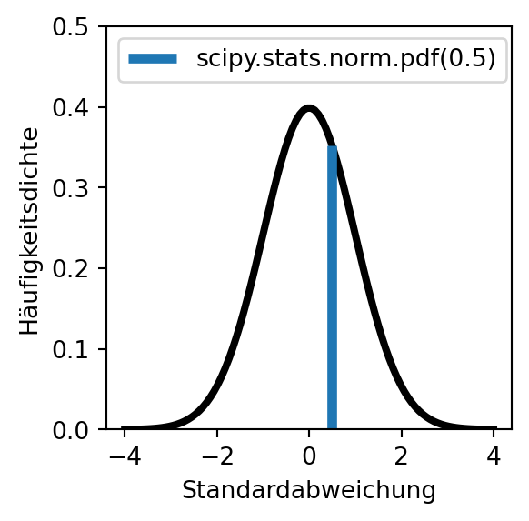
Beschreibung
Die Funktion scipy.stats.norm.pdf(x) berechnet die Dichte der Normalverteilung am Punkt x (PDF = probability density function). x kann auch ein array sein - so wurde die linksstehende Kurve mit dem Befehl scipy.stats.norm.pdf(np.linspace(-4, 4, 100)) berechnet.

Beschreibung
Die Funktion scipy.stats.norm.cdf(x) berechnet den Anteil der Werte links von x (CDF = cumulative density function).
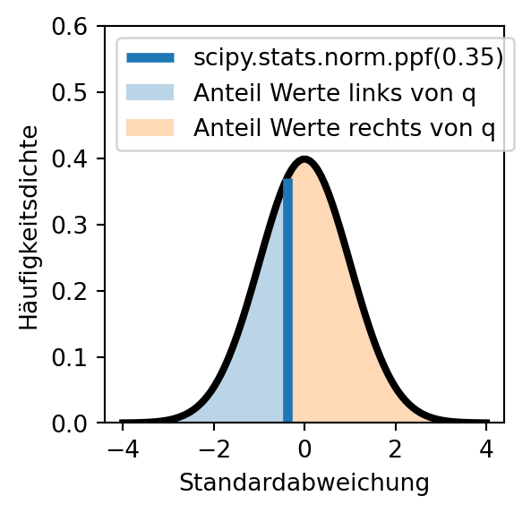
Beschreibung
Die Funktion scipy.stats.norm.ppf(q) ist die Quantilfunktion der Normalverteilung und die Umkehrfunktion der kumulativen Häufigkeitsdichtefunktion (CDF). Die Funktion berechnet für \(0 \le q \le 1\) den Wert x, links von dem der Anteil q aller Werte liegt und rechts von dem der Anteil 1-q liegt (PPF = percentile point function).
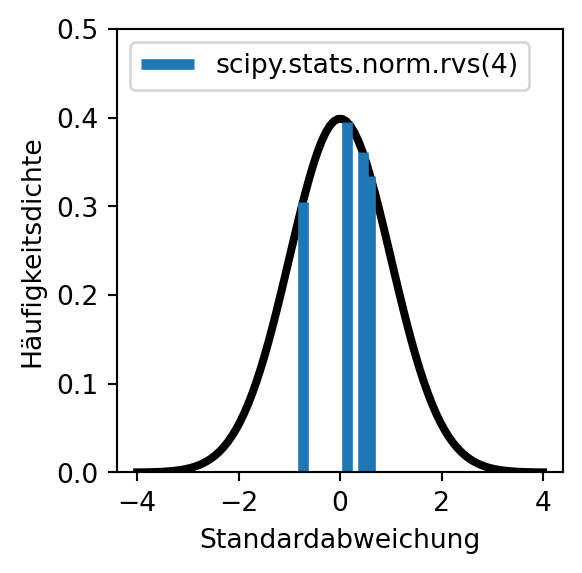
Beschreibung
Die Funktion scipy.stats.norm.rvs(size) zieht size Zufallszahlen aus der Normalverteilung.
Mit den Parametern loc = mittelwert und scale = standardabweichung kann die Form der Normalverteilung angepasst werden.
Aufgabe Normalverteilung
hier ein paar Aufgaben, welche Anteile… usw. wenn scale = 15 und und mean = 100 ist (IQ-Verteilung)
plt.hist(dose2, bins = 7, density = True, edgecolor = 'black', alpha = 0.6);
plt.title('Länge zahnbildender Zellen bei Meerschweinchen')
# Achsenbeschriftung
plt.xlabel('Länge der zahnbildenden Zellen (μm)')
plt.ylabel('Häufigkeitsdichte')
# Normalverteilung berechnen.
hist, bin_edges = np.histogram(dose2, bins = 7)
x_values = np.linspace(min(bin_edges), max(bin_edges), 100)
## Normalverteilungsfunktion mit Python berechnen
y_values = 1 / (dose2_std * np.sqrt(2 * np.pi)) * np.exp(- (x_values - dose2_mean) ** 2 / (2 * dose2_std ** 2))
plt.plot(x_values, y_values, label = 'Normalverteilung', lw = 4)
## scipy
y_values_scipy = scipy.stats.norm.pdf(x_values, loc = dose2_mean, scale = dose2_std)
plt.plot(x_values, y_values_scipy, label = 'scipy', linestyle = 'dashed')
plt.legend()
plt.show()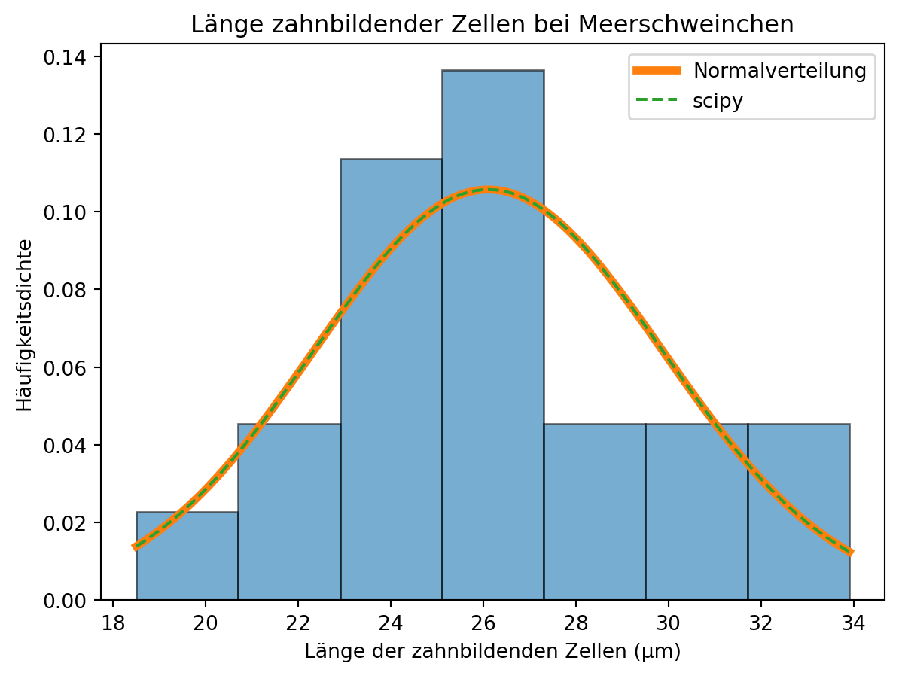
Die Annäherung der Verteilung von Messwerten an die Normalverteilung wird anhand des Gewichts von Pinguinen aus dem Datensatz palmerpenguins gezeigt.
palmerpenguins

Meet the Palmer penguins von @allison_horst steht unter der Lizenz CC0-1.0 und ist auf GitHub abrufbar. 2020
Der Datensatz steht unter der Lizenz CCO und ist in R sowie auf GitHub verfügbar. 2020
# R Befehle, um den Datensatz zu laden
install.packages("palmerpenguins")
library(palmerpenguins)Horst AM, Hill AP und Gorman KB. 2020. palmerpenguins: Palmer Archipelago (Antarctica) penguin data. R package version 0.1.0. https://allisonhorst.github.io/palmerpenguins/. doi: 10.5281/zenodo.3960218.
penguins = pd.read_csv(filepath_or_buffer = "c:/Users/mapoe004/Desktop/Arbeitsordner Maik Poetzsch/BCD/Bausteine/Werkzeugbausteine/w-Pandas/w-pandas/skript/01-daten/penguins.csv")
# Tiere mit unvollständigen Einträgen entfernen
penguins.drop(np.where(penguins.apply(pd.isna).any(axis = 1))[0], inplace = True)
print(penguins.info(), "\n");<class 'pandas.core.frame.DataFrame'>
Index: 333 entries, 0 to 343
Data columns (total 8 columns):
# Column Non-Null Count Dtype
--- ------ -------------- -----
0 species 333 non-null object
1 island 333 non-null object
2 bill_length_mm 333 non-null float64
3 bill_depth_mm 333 non-null float64
4 flipper_length_mm 333 non-null float64
5 body_mass_g 333 non-null float64
6 sex 333 non-null object
7 year 333 non-null int64
dtypes: float64(4), int64(1), object(3)
memory usage: 23.4+ KB
None
Der Datensatz enthält Daten für drei Pinguinarten.
print(penguins.groupby(by = penguins['species']).size())species
Adelie 146
Chinstrap 68
Gentoo 119
dtype: int64Unter anderen wurde das Körpergewicht in Gramm gemessen, das in der Spalte ‘body_mass_g’ eingetragen ist.
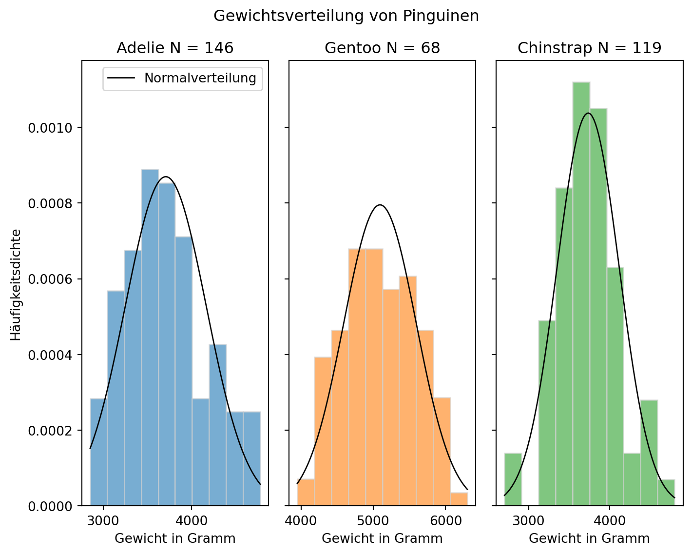
fig, (ax1, ax2, ax3) = plt.subplots(1, 3, figsize = (7.5, 6), sharey = True, layout = 'tight')
plt.suptitle('Gewichtsverteilung von Pinguinen')
# Adelie
data = penguins['body_mass_g'][penguins['species'] == penguins['species'].unique()[0]]
## Histogramm
ax1.hist(data, alpha = 0.6, edgecolor = 'lightgrey', color = 'C0', density = True)
ax1.set_xlabel('Gewicht in Gramm')
ax1.set_ylabel('Häufigkeitsdichte')
ax1.set_title(label = penguins['species'].unique()[0] + " N = " + str(penguins.groupby(by = penguins['species']).size().iloc[0]))
## Normalverteilungskurve
mittelwert = data.mean()
stichprobenstandardabweichung = data.std(ddof = 1)
hist, bin_edges = np.histogram(data)
x_values = np.linspace(min(bin_edges), max(bin_edges), 100)
y_values = 1 / (stichprobenstandardabweichung * np.sqrt(2 * np.pi)) * np.exp(- (x_values - mittelwert) ** 2 / (2 * stichprobenstandardabweichung ** 2))
ax1.plot(x_values, y_values, color = 'black', linewidth = 1, label = 'Normalverteilung')
ax1.set_label('Normalverteilungskurve')
ax1.legend()
# Chinstrap
data = penguins['body_mass_g'][penguins['species'] == penguins['species'].unique()[1]]
## Histogramm
ax2.hist(data, alpha = 0.6, edgecolor = 'lightgrey', color = 'C1', density = True)
ax2.set_xlabel('Gewicht in Gramm')
ax2.set_title(label = penguins['species'].unique()[1] + " N = " + str(penguins.groupby(by = penguins['species']).size().iloc[1]))
## Normalverteilungskurve
mittelwert = data.mean()
stichprobenstandardabweichung = data.std(ddof = 1)
hist, bin_edges = np.histogram(data)
x_values = np.linspace(min(bin_edges), max(bin_edges), 100)
y_values = 1 / (stichprobenstandardabweichung * np.sqrt(2 * np.pi)) * np.exp(- (x_values - mittelwert) ** 2 / (2 * stichprobenstandardabweichung ** 2))
ax2.plot(x_values, y_values, color = 'black', linewidth = 1)
# Gentoo
data = penguins['body_mass_g'][penguins['species'] == penguins['species'].unique()[2]]
## Histogramm
ax3.hist(data, alpha = 0.6, edgecolor = 'lightgrey', color = 'C2', density = True)
ax3.set_xlabel('Gewicht in Gramm')
ax3.set_title(label = penguins['species'].unique()[2] + " N = " + str(penguins.groupby(by = penguins['species']).size().iloc[2]))
## Normalverteilungskurve
mittelwert = data.mean()
stichprobenstandardabweichung = data.std(ddof = 1)
hist, bin_edges = np.histogram(data)
x_values = np.linspace(min(bin_edges), max(bin_edges), 100)
y_values = 1 / (stichprobenstandardabweichung * np.sqrt(2 * np.pi)) * np.exp(- (x_values - mittelwert) ** 2 / (2 * stichprobenstandardabweichung ** 2))
ax3.plot(x_values, y_values, color = 'black', linewidth = 1)
plt.show()Aufgabe Normalverteilung
Aufgabe: Histogramm von (meerschweinchen[‘len’] mit 7 bins und mit Normalverteilungskurve zeichnen
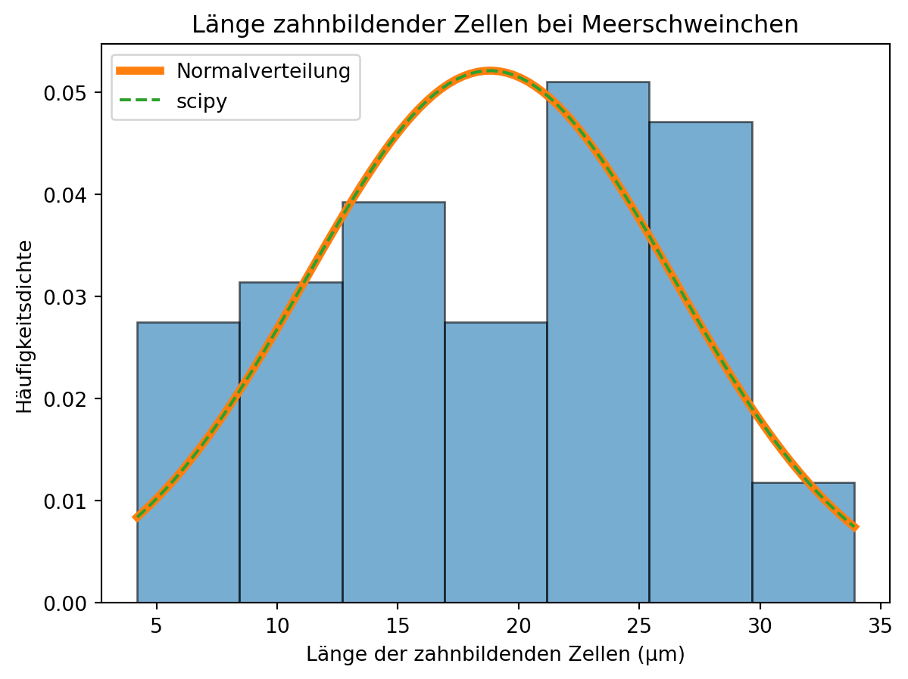
Im nächsten Schritt wollen wir auf den tatsächlichen Mittelwert der Pinguine schließen
Die Überlegung, dass von Stichprobenwerten auf den tatsächlichen Wert in der Grundgesamtheit geschlossen werden kann, ist (beispielsweise für den Mittelwert) wie folgt:
Wenn eine Stichprobe aus einer Grundgesamtheit gezogen wird, dann streuen die Stichprobenwerte normalverteilt um den Mittelwert der Grundgesamtheit. Bei einer Normalverteilung liegen
- 68,27 % aller Werte im Intervall \(\pm 1 ~ s\),
- 95,45 % aller Werte im Intervall \(\pm 2 ~ s\) und
- 99,73 % aller Werte im Intervall \(\pm 3 ~ s\).
Mit der gleichen Wahrscheinlichkeitsverteilung liegt der unbekannte Mittelwert der Grundgesamtheit um einen zufälligen Wert aus der Stichprobe.
Der Erwartungswert kann mit einer gewissen Wahrscheinlichkeit aus dem Standardfehler des Mittelwerts einer Stichprobe geschätzt werden. Um das Konfidenzintervall zu bestimmen, muss eine Vertrauenswahrscheinlichkeit gewählt werden.
- der Erwartungswert liegt in 68,27 % aller Fälle im Intervall \(\pm 1 ~ \frac{s}{\sqrt{n}}\),
- der Erwartungswert liegt in 95,45 % aller Fälle im Intervall \(\pm 2 ~ \frac{s}{\sqrt{n}}\) und
- der Erwartungswert liegt in 99,73 % aller Fälle im Intervall \(\pm 3 ~ \frac{s}{\sqrt{n}}\).
Häufig wird das Konfidenzintervall 95 % gewählt, was \(\pm 1.96 ~ \frac{s}{\sqrt{n}}\) entspricht . (Das gilt aber nur für große Stichproben. Für kleine n folgen die Stichprobenmittelwerte einer t-Verteilung. Man sagt, dass sich die Werte der t-Verteilung ab n > 30 der Normalverteilung annähern. Hier müsste man eigentlich die t-Verteilung vorstellen.)
statt: scipy.stats.norm.cdf(1) nimmt man: scipy.stats.t.cdf(1, df = 4), wobei df Stichprobengröße -1 ist.
Für eine Stichprobengröße von 4 gilt: scipy.stats.t.cdf(1, df = 4) - scipy.stats.t.cdf(- 1, df = 4) np.float64(0.626099033699941) –> 62,6 % der Werte
scipy.stats.t.cdf(2, df = 4) - scipy.stats.t.cdf(- 2, df = 4) np.float64(0.8838834764831844)
scipy.stats.t.cdf(2, df = 4) - scipy.stats.t.cdf(- 2, df = 4) np.float64(0.8838834764831844)
Schritte zur Berechnung:
Bestimme den Stichprobenmittelwert (\bar{x}).
Bestimme (s) (Stichprobenstandardabweichung) oder (\sigma).
Bestimme (n) (Stichprobengröße).
Wähle das Konfidenzniveau und bestimme den entsprechenden Z- oder t-Wert.
Berechne das Konfidenzintervall mit den obigen Formeln.Ein höheres Konfidenzniveau ergibt ein breiteres Intervall, dass mit höherer Sicherheit den wahren Mittelwert abdeckt.
–> Normalverteilung und die Wahrscheinlichkeiten erklären - 1standardfehler, 2standardfehler, 3standardfehler = Konfidenzintervalle –> das wird zu kompliziert oder?
to do: fig-alt
to do: panel Stichprobe mit Streuung in Intervallen des Standardfehlers
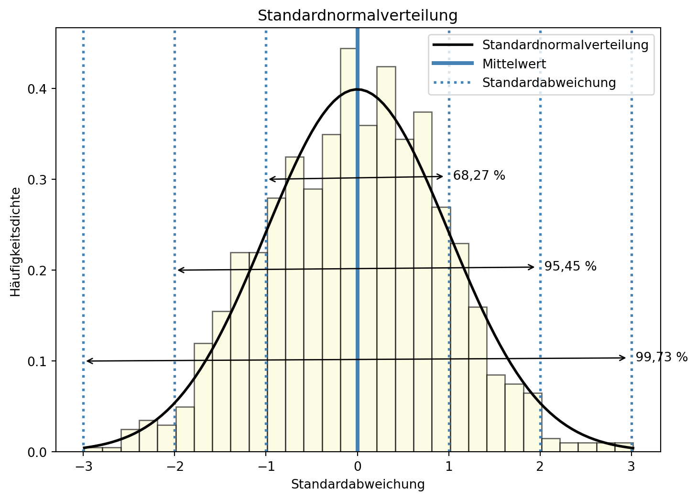
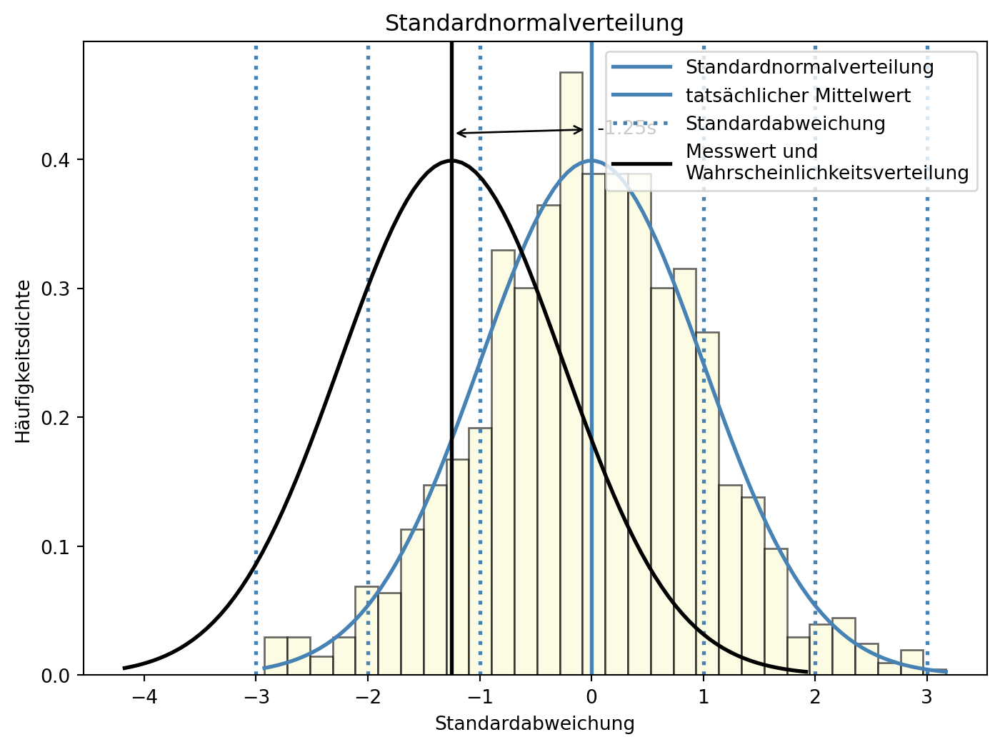
Optisch ist das nicht schön… das sollte an der geringen Standardabweichung von ~ 0.2 in der Stichprobe liegen. Das staucht die Kurve. To do: Kontrollieren, ob alles richtig ist.
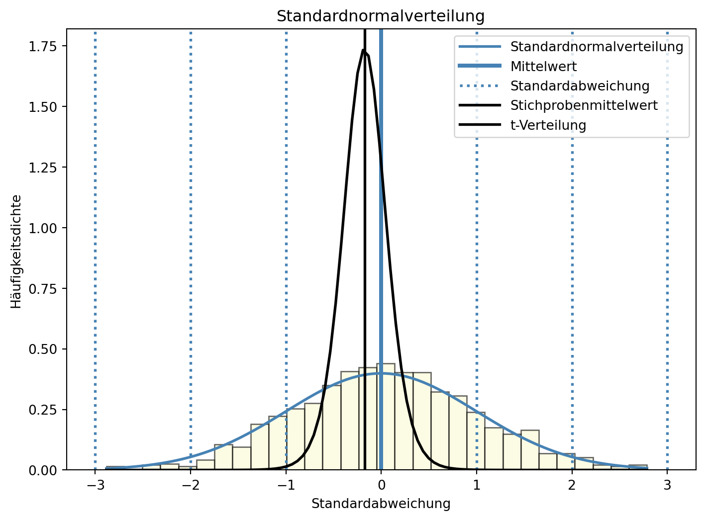
Aufgabe könnte das plotten der Schnabellänge sein

Bill dimensions von @allison_horst steht unter der Lizenz CC0-1.0 und ist auf GitHub abrufbar. 2020
Einen Überblick über den Datensatz verschafft die Methode DataFrame.info().
print(penguins.info())<class 'pandas.core.frame.DataFrame'>
Index: 333 entries, 0 to 343
Data columns (total 8 columns):
# Column Non-Null Count Dtype
--- ------ -------------- -----
0 species 333 non-null object
1 island 333 non-null object
2 bill_length_mm 333 non-null float64
3 bill_depth_mm 333 non-null float64
4 flipper_length_mm 333 non-null float64
5 body_mass_g 333 non-null float64
6 sex 333 non-null object
7 year 333 non-null int64
dtypes: float64(4), int64(1), object(3)
memory usage: 23.4+ KB
NoneGilt auch für Messungen: Wenn sehr häufig gemessen wird
Das plotten ist aber aufwändig, weil man alles manuell erstellen muss. –> optional / für später
Wenn eine Stichprobe aus einer Grundgesamtheit gezogen wird, dann streut der Stichprobenmittelwert um den Mittelwert der Grundgesamtheit, also den Erwartungswert. Anhand des Würfelexperiments wurde gezeigt, dass mit zunehmender Stichprobengröße Stichprobenmittelwerte in der Nähe des Erwartungswerts immer wahrscheinlicher werden als solche, die weiter entfernt liegen.
Verzerrung (Bias): https://de.wikipedia.org/wiki/Verzerrung_einer_Sch%C3%A4tzfunktion quantifiziert das systematische Über- oder Unterschätzen der Schätzfunktion